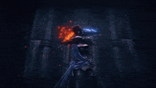

Rellana, the Twin Moon Knight, is a mysterious and enigmatic figure in the world of Elden Ring. She is one of the most powerful and revered warriors in the Lands Between, known for her unparalleled combat skills and her unwavering loyalty to the Erdtree.
